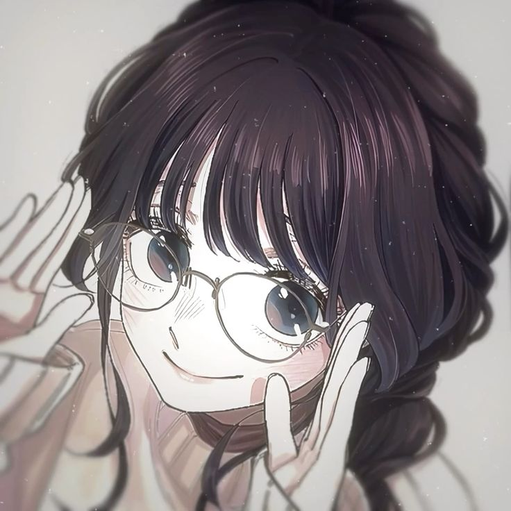
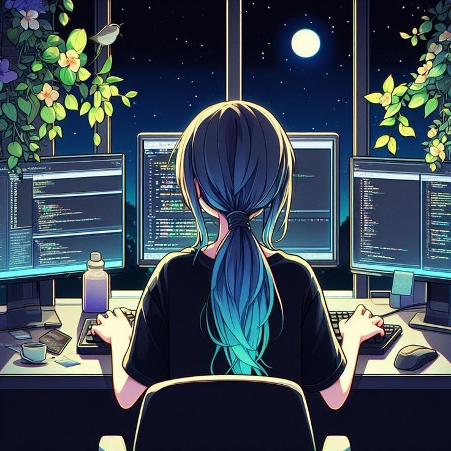
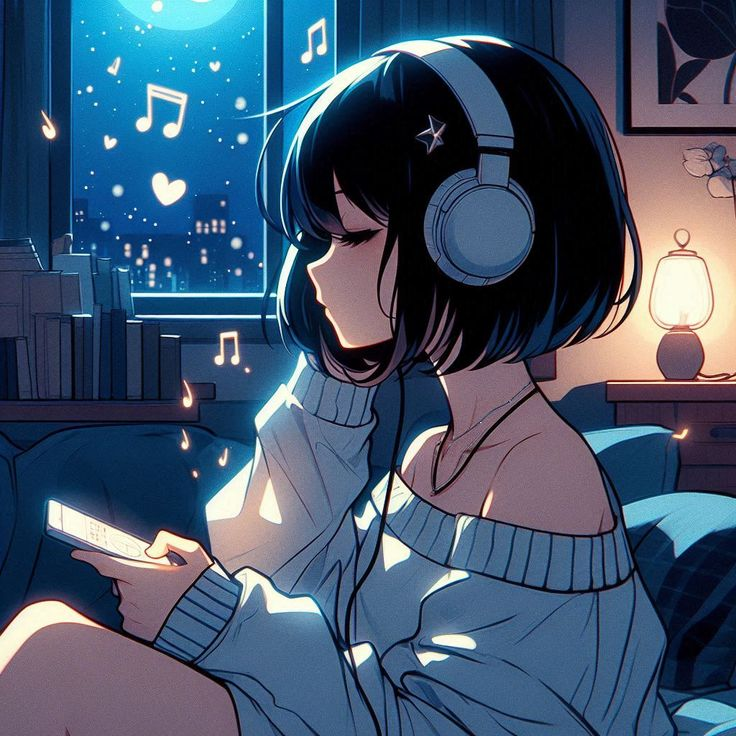
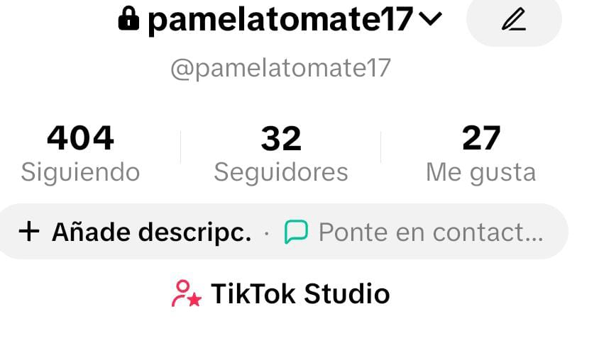

Soy una estudiante de primer año de Ingeniería de Sistemas en la UNSA, tengo 18 años pero cumplí hace poco, me gusta el ceviche, me gusta escuchar canciones variadas como baladas, especie rock, entre otros. Mi deporte favorito el cual practicaba antes es el fútbol, me gusta dibujar, pero no me gusta pintar y tengo poca paciencia para las manualidades.
Bueno, el curso me parece interesante porque vamos a poder conocer más sobre qué hay detrás de la creación del software, desde cómo se planifica hasta cómo se construyen las aplicaciones web. Además, nos dará bases para aprender a programar y desarrollar proyectos propios.
Mis dos últimos años en la secundario los cursé en un colegio pre-universitario para prepararme y así ingresar a la Universidad Nacional de San Agustín, mi ingreso fue más pesistencia y autonomía.
Escogi Ingeniería de Sistemas porque fue la única carrera que me interesó y más porque desde secundaria me interesó la tecnología, hicimos proyectos como una alarma, trabajamos con Arduino y además de un poco de HTML.
Son escuchar música, cantar en tiempos libres, además de dibujar aunque no me gusta pintar mis dibujos al final.
Tik Tok
